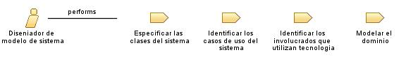

| Role: Diseniador de modelo de sistema |
| |
 |
| El Diseñador de Modelo de Sistema en el proceso de la frutería crea la estructura y la arquitectura del sistema de compra de insumos a proveedores |
| Synonyms: Arquitecto de Software, Diseñador de Arquitectura de Sistema, Ingeniero de Sistemas |
|
Relationships
 |
| Primary Performs |
|
| Modifies |
|
Main Description
| El Diseñador de Modelo de Sistema en el proceso de la frutería es responsable de diseñar la estructura y la arquitectura
del sistema, incluyendo la definición de componentes, módulos y su interacción. Trabaja en colaboración con el equipo de
desarrollo y los analistas de negocio para comprender los requisitos funcionales y no funcionales del sistema. Además,
define los estándares y las mejores prácticas de desarrollo a seguir durante el ciclo de vida del proyecto. El Diseñador de
Modelo de Sistema también puede participar en la selección de tecnologías y herramientas adecuadas para implementar la
arquitectura propuesta |
Staffing
| Skills | Conocimiento profundo de arquitecturas de sistemas, experiencia en diseño y modelado de sistemas complejos, habilidad para
comunicar ideas técnicas de manera clara y concisa, comprensión de principios de diseño de software y patrones de
arquitectura |
| Assignment Approaches | Definir la estructura y arquitectura del sistema, colaborar con el equipo de desarrollo para garantizar la implementación
correcta de la arquitectura propuesta, documentar la arquitectura del sistema y sus componentes, realizar revisiones y
análisis de la arquitectura para garantizar su viabilidad y escalabilidad, investigar y evaluar nuevas tecnologías y
herramientas |
| Synonyms | Arquitecto de Software, Diseñador de Arquitectura de Sistema, Ingeniero de Sistemas |
Key Considerations
| Diseñador de Modelo de Sistema, arquitectura de sistema, diseño de componentes, escalabilidad, estándares de desarrollo |
|